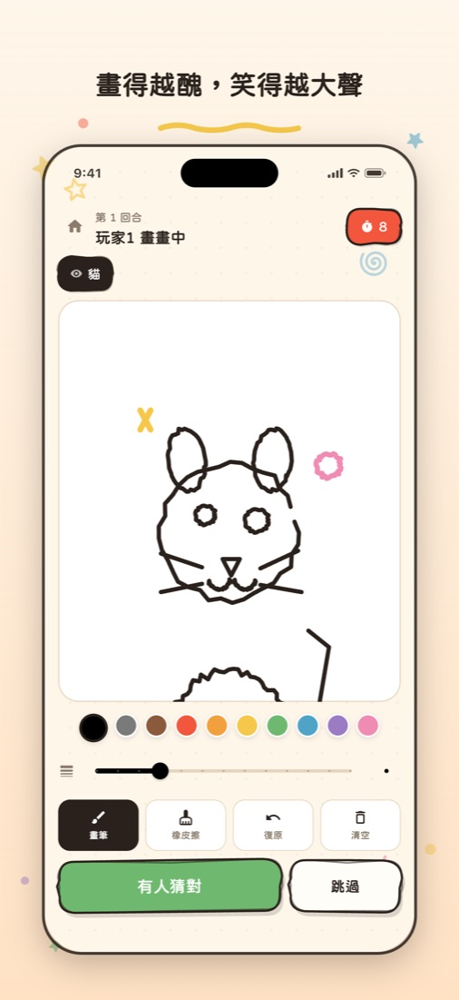
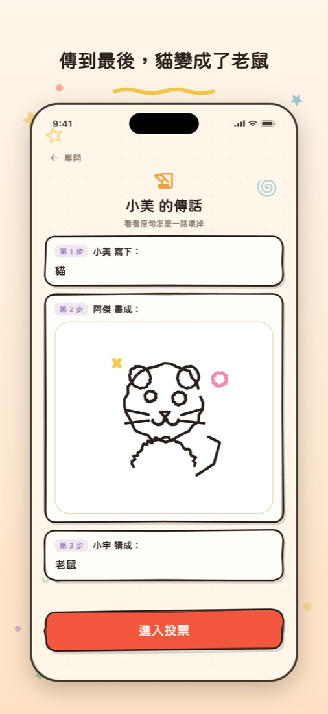

選玩法與題庫
單機同樂、自訂出題、接力共畫、傳話遊戲，挑一種；再選題庫與難度。
一支手機輪流畫的猜謎派對遊戲
一個人畫、大家猜，不能寫字也不能出聲。把手機傳下去，從經典搶答到傳話遊戲，現在就開局。

HOW TO PLAY / 玩法
第一次玩你畫我猜？先選「單機同樂」，從簡單題庫開始。重點是畫出關鍵特徵，不是畫得像。
單機同樂、自訂出題、接力共畫、傳話遊戲，挑一種；再選題庫與難度。
輪到的人看題目，在手機上用畫筆畫，不能寫字、不能出聲，預設 60 秒。
其他人喊答案，猜中就換下一位；傳話玩法則在最後回看整條作品，笑成一團。
IN THE GAME / 實際畫面


WHY THIS APP / 遊戲特色
手機輪流傳，聚餐、尾牙、迎新或露營，打開就能開局，離線也行。
經典搶答、自訂出題、接力共畫，再加四種傳話玩法，人多人少都有得玩。
動物、美食、職業、運動到台灣在地、日本、越南題庫，三種難度。
把朋友、公司或班上的梗放進去，自訂出題模式只會用你輸入的題目。
GAME MODES / 玩法
除了經典的「一人畫、大家猜」，還有好幾種適合不同人數的玩法，都在同一支手機上完成：
每種玩法的結算頁都有「歷史回顧」，可以回看這一場所有人的作品。線上連線功能即將推出。
WORD LIST / 題目
好題目要「畫得出來、猜得到」。下面取自 App 題庫，內建 600 多個，分簡單、普通、困難三種難度，可以直接拿去玩。
形狀單純，幾筆就能畫出特徵。適合小朋友與第一次玩的人。
| 題目 | 英文 |
|---|---|
| 貓 | Cat |
| 蘋果 | Apple |
| 雨傘 | Umbrella |
| 足球 | Soccer |
| 公車 | Bus |
| 學校 | School |
| 牛肉麵 | Beef Noodle Soup |
| 醫生 | Doctor |
要想一下怎麼拆解，例如用場景或動作暗示。
| 題目 | 英文 |
|---|---|
| 企鵝 | Penguin |
| 海豚 | Dolphin |
| 松鼠 | Squirrel |
| 河馬 | Hippo |
| 鯨魚 | Whale |
| 螞蟻 | Ant |
| 浣熊 | Raccoon |
| 鴿子 | Pigeon |
抽象或形狀複雜，畫的人和猜的人都要動腦。
| 題目 | 英文 |
|---|---|
| 變色龍 | Chameleon |
| 暴龍 | T-Rex |
| 獵豹 | Cheetah |
| 食蟻獸 | Anteater |
| 阿凡達 | Avatar |
| 美女與野獸 | Beauty and the Beast |
朋友聚會、家庭聚餐、過年團圓、公司尾牙、迎新、營隊團康、班級活動、露營夜晚，連搭車等待的空檔也能玩。不用準備紙筆或白板，一支手機傳下去就能開局，離線可玩。
下載免費，每個題庫可以先玩 20 題。購買完整版是一次買斷，解鎖全部題目並移除廣告；換手機在 App 內按「恢復購買」即可找回。
FAQ
一個人抽到題目後在手機上畫圖，不能寫字也不能說話，其他人在時間內猜出答案。猜中就換下一位畫；每回合預設 60 秒。
不需要。一支手機輪流傳就能玩，不用連線、不用註冊帳號。
內建 600 多個題目，分動物、美食飲品、生活用品、交通工具、電影卡通、職業、地點地標、運動、台灣在地、日本、越南等題庫，每個題庫有簡單、普通、困難三種難度。本頁下方列了範例。
可以。「自訂出題」模式由玩家自己輸入題目，適合放進朋友之間的梗、公司或班上的人事物。
可以。輪流畫、輪流猜就能玩；人多時用「接力共畫」或「傳話遊戲」會更熱鬧。
可以，而且醜才好笑。傳話類玩法（畫圖傳話、臨摹傳話、畫猜傳話、畫歪了）就是靠「畫歪、猜錯」製造笑點，最後揭曉整條傳話鏈，貓可能變成老鼠。
第一個人寫下或畫出題目，下一個人只看上一棒的作品接著畫或猜，一路傳到最後再一起回看每一步怎麼走歪。App 有畫圖傳話、臨摹傳話、畫猜傳話（限 4、6、8、10 位玩家）和畫歪了。
下載免費，每個題庫可先玩 20 題。完整版是一次買斷，解鎖全部題目並移除廣告。
目前只有 iPhone／iPad 版（iOS 15 以上），沒有網頁版。線上連線功能還在規劃中。
傳一支手機，就能開始下一局。
免費下載App Store